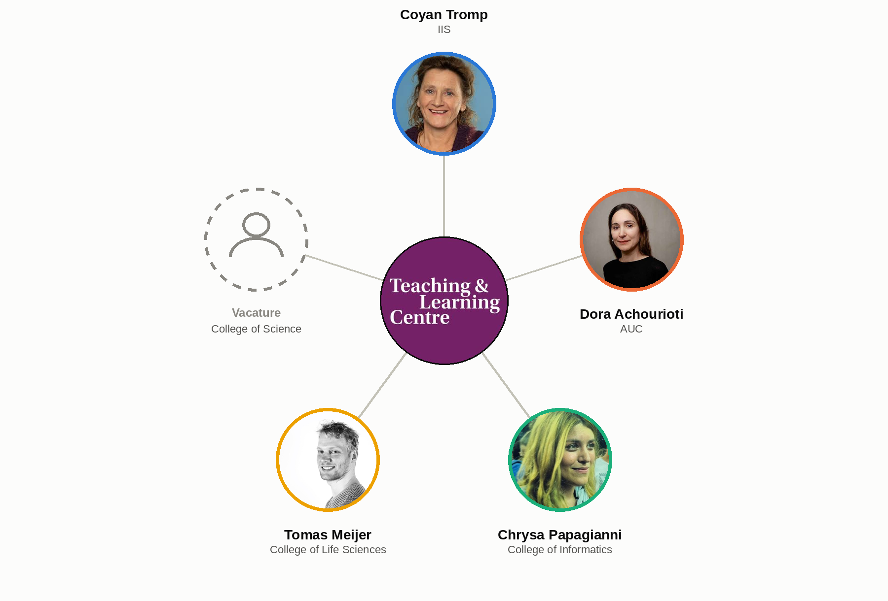

<!DOCTYPE html>
<html lang="en">
<head>
    <meta charset="utf-8" />
    <meta name="viewport" content="width=device-width, initial-scale=1.0, maximum-scale=1.0, user-scalable=no" />

    <title></title>
    <link rel="stylesheet" href="../_shared/e715a0c7082f/dist/reset.css">
    <link rel="stylesheet" href="../_shared/e715a0c7082f/dist/reveal.css" />
    <link rel="stylesheet" href="css/slides-extended.css" />
    <link rel="stylesheet" href="../_shared/e715a0c7082f/dist/theme/white.css" id="theme" />
    <link rel="stylesheet" href="../_shared/e715a0c7082f/plugin/highlight/zenburn.css" />
    <link rel="stylesheet" href="../_shared/e715a0c7082f/plugin/customcontrols/style.css">


    <link rel="stylesheet" href="css/vlt-template.css" />

    <script defer src="../_shared/e715a0c7082f/dist/fontawesome/all.min.js"></script>

    <script type="text/javascript">
        function pageInIframe() {
            return (window.location !== window.parent.location);
        }

        let forgetPop = true;
        function onPopState(event) {
            if(forgetPop){
                forgetPop = false;
            } else if( pageInIframe()) {
                parent.postMessage(event.target.location.href, "app://obsidian.md");
            }
        }
        window.onpopstate = onPopState;
        window.onmessage = event => {
            if(event.data == "reload"){
                window.document.location.reload();
            }
            forgetPop = true;
        }

        function fitElements() {
            const itemsToFit = document.getElementsByClassName('fitText');
            for (const item in itemsToFit) {
                if (Object.hasOwnProperty.call(itemsToFit, item)) {
                    const element = itemsToFit[item];
                    fitElement(element, 1, 1000);
                    element.classList.remove('fitText');
                }
            }
        }

        function fitElement(element, start, end) {

            let size = (end + start) / 2;
            element.style.fontSize = `${size}px`;

            if (Math.abs(start - end) < 1) {
                while (element.scrollHeight > element.offsetHeight) {
                    size--;
                    element.style.fontSize = `${size}px`;
                }
                return;
            }

            if (element.scrollHeight > element.offsetHeight) {
                fitElement(element, start, size);
            } else {
                fitElement(element, size, end);
            }
        }

        document.onreadystatechange = () => {
            fitElements();
            if (document.readyState === 'complete') {
                if (pageInIframe() && window.location.href.indexOf("?export") != -1){
                    parent.postMessage(event.target.location.href, "app://obsidian.md");
                }
                if (window.location.href.indexOf("print-pdf") != -1){
                    let stateCheck = setInterval(() => {
                        clearInterval(stateCheck);
                        window.print();
                    }, 250);
                }
            }
        };
    </script>
</head>

<body>
    <div class="reveal">
        <div class="slides"><section data-separator="
?
---
?
" data-separator-vertical="
?
--
?
" data-separator-notes="note:" data-markdown><script type="text/template"><!-- .slide: class="title-slide drop" data-state="vlt-title" template="" -->
<div class="" style="position: absolute; left: 0px; top: 0px; height: 700px; width: 960px; min-height: 700px; display: flex; flex-direction: column; align-items: start; justify-content: center" absolute="true">

# TLC AI Network
### Update from TLC Science


<!-- Optional subline: replace the banner above by 
(programme + "Artificial Intelligence Track"). -->

<p class="vlt-title-meta"><span class="vlt-name">Vincent Tijms</span><br><span class="vlt-date">27-10-2026</span></p>

<aside class="notes"><p>In this update I am speaking both on behalf of TLC Science and the VLT programme</p>
</div></aside></script></section><section data-separator="
?
---
?
" data-separator-vertical="
?
--
?
" data-separator-notes="note:" data-markdown><script type="text/template"><!-- .slide: class="drop" template="" -->
<div class="" style="position: absolute; left: 0px; top: 0px; height: 700px; width: 960px; min-height: 700px; display: flex; flex-direction: column; align-items: start; justify-content: center" absolute="true">

## Visible Learning Trajectories - Track Artificial Intelligence

- Track is being followed by programmes across faculties
- Currently working on all bachelor programmes at CBE
- Standalone sessions also popular
  - Towards a vision
  - Assessment structure and GenAI
- Vision session offers a gateway into the track

<aside class="notes"><p>[Speaker notes]</p>
</div></aside></script></section><section data-separator="
?
---
?
" data-separator-vertical="
?
--
?
" data-separator-notes="note:" data-markdown><script type="text/template"><!-- .slide: class="drop" template="" -->
<div class="" style="position: absolute; left: 0px; top: 0px; height: 700px; width: 960px; min-height: 700px; display: flex; flex-direction: column; align-items: start; justify-content: center" absolute="true">

<div style="display:flex; align-items:flex-start; gap:16px; width:100%; box-sizing:border-box; margin-top:30px;">
<div style="flex:0 0 300px; font-size:0.8em;">

<h2 style="margin:0 0 0.4em 0; line-height:1.1;">TLC Science - Assessment Network</h2>

- Teacher representatives across colleges
- Work on innovation of assessment (demand-driven)
- E.g. redesign thesis projects, interactive oral assessments

</div>
<div style="flex:0 0 840px;">




</div>
</div>
</div></script></section><section ><section data-separator="
?
---
?
" data-separator-vertical="
?
--
?
" data-separator-notes="note:" data-markdown><script type="text/template"><!-- .slide: class="drop" template="" -->
<div class="" style="position: absolute; left: 0px; top: 0px; height: 700px; width: 960px; min-height: 700px; display: flex; flex-direction: column; align-items: start; justify-content: center" absolute="true">

<div style="font-size:0.72em; margin-top:40px;">

<h2 style="margin:0 0 0.5em 0; line-height:1.1; font-size:1.45em;">TLC Science - Experiments and ideation</h2>

- Two large-scale projects
	- Bachelor Future Planet Studies: integrate UvA AI Chat into thesis process for both students and teachers
	- Bachelor Beta-Gamma: integrate UvA AI Chat into first-year research project
- Demand for more precise didactic framework for using GenAI as means
- BSc Informatics (_Scientific Data Analysis_) will experiment with self-built tool for formative assessment (using on-premise infrastructure) to gauge student and teacher response
- Piloting use of Toetskaart ([toetskaart.duckdns.org](https://toetskaart.duckdns.org)) while updating assessment structure in BSc Psychobiology
- Considering a menu of options for whitelisting/blacklisting AI use in Course Manuals

</div>
</div></script></section><section data-separator="
?
---
?
" data-separator-vertical="
?
--
?
" data-separator-notes="note:" data-markdown><script type="text/template"><!-- .slide: class="drop" template="" -->
<div class="" style="position: absolute; left: 0px; top: 0px; height: 700px; width: 960px; min-height: 700px; display: flex; flex-direction: column; align-items: start; justify-content: center" absolute="true">

<div style="display:flex; align-items:flex-start; gap:16px; width:100%; box-sizing:border-box; margin-top:30px; margin-left:-170px;">
<div style="flex:0 0 300px; font-size:0.8em;">

## Toetskaart

- Toetskaart is a visualisation of a programme's assessment structure
- It was developed for examination boards to have at-a-glance information about assessment quality at the programme level

</div>
<div style="flex:0 0 960px;">

<iframe src="https://toetskaart.duckdns.org" width="960" height="560" style="border:1px solid #ccc;" allowfullscreen></iframe>

</div>
</div>
</div></script></section><section data-separator="
?
---
?
" data-separator-vertical="
?
--
?
" data-separator-notes="note:" data-markdown><script type="text/template"><!-- .slide: class="drop" template="" -->
<div class="" style="position: absolute; left: 0px; top: 0px; height: 700px; width: 960px; min-height: 700px; display: flex; flex-direction: column; align-items: start; justify-content: center" absolute="true">


</div></script></section></section><section data-separator="
?
---
?
" data-separator-vertical="
?
--
?
" data-separator-notes="note:" data-markdown><script type="text/template"><!-- .slide: class="drop" template="" -->
<div class="" style="position: absolute; left: 0px; top: 0px; height: 700px; width: 960px; min-height: 700px; display: flex; flex-direction: column; align-items: start; justify-content: center" absolute="true">

<div style="margin-top:90px;">

# Thank you

<div style="width:120px; height:5px; background:#bc0031; margin:6px 0 30px 0;"></div>

<div style="width:760px; border-bottom:1px solid #d9d9d9;">
<div style="display:flex; align-items:baseline; gap:40px; padding:18px 0; border-top:1px solid #d9d9d9;">
<div style="flex:0 0 400px;">
<div style="font-family:'Times New Roman',Times,serif; font-weight:700; font-size:1.25em; color:#1a1a1a;">TLC Science AI Team</div>
<div style="font-size:0.62em; letter-spacing:0.06em; text-transform:uppercase; color:#6b6b6b; margin-top:4px;">Questions and collaboration</div>
</div>
<div style="font-size:0.8em;"><a href="mailto:ai-tlc-science@uva.nl">ai-tlc-science@uva.nl</a></div>
</div>
<div style="display:flex; align-items:baseline; gap:40px; padding:18px 0; border-top:1px solid #d9d9d9;">
<div style="flex:0 0 400px;">
<div style="font-family:'Times New Roman',Times,serif; font-weight:700; font-size:1.25em; color:#1a1a1a;">Vincent Tijms</div>
<div style="font-size:0.62em; letter-spacing:0.06em; text-transform:uppercase; color:#6b6b6b; margin-top:4px;">Educational adviser, TLC Science</div>
</div>
<div style="font-size:0.8em;"><a href="mailto:v.tijms@uva.nl">v.tijms@uva.nl</a></div>
</div>
<div style="display:flex; align-items:baseline; gap:40px; padding:18px 0; border-top:1px solid #d9d9d9;">
<div style="flex:0 0 400px;">
<div style="font-family:'Times New Roman',Times,serif; font-weight:700; font-size:1.25em; color:#1a1a1a;">Slides</div>
<div style="font-size:0.62em; letter-spacing:0.06em; text-transform:uppercase; color:#6b6b6b; margin-top:4px;">Available online</div>
</div>
<div style="font-size:0.8em;"><a href="https://tijmz.github.io/slides">tijmz.github.io/slides</a></div>
</div>
</div>

</div>
</div></script></section></div>
    </div>

    <script src="../_shared/e715a0c7082f/dist/reveal.js"></script>
    <script src="../_shared/e715a0c7082f/plugin/notes/notes.js"></script>
    <script src="../_shared/e715a0c7082f/plugin/markdown/markdown.js"></script>
    <script src="../_shared/e715a0c7082f/plugin/obsidian-markdown.js"></script>
    <script src="../_shared/e715a0c7082f/plugin/highlight/highlight.js"></script>

    <script src="../_shared/e715a0c7082f/plugin/zoom/zoom.js"></script>
    <script src="../_shared/e715a0c7082f/plugin/math/math.js"></script>
    <script src="../_shared/e715a0c7082f/plugin/mermaid/mermaid.js"></script>
    <script src="../_shared/e715a0c7082f/plugin/chart/chart.umd.js"></script>
    <script src="../_shared/e715a0c7082f/plugin/chart/plugin.js"></script>
    <script src="../_shared/e715a0c7082f/plugin/customcontrols/plugin.js"></script>


    <script>
        function extend() {
            const target = {};
            for (let i = 0; i < arguments.length; i++) {
                const source = arguments[i];
                for (const key in source) {
                    if (source.hasOwnProperty(key)) {
                        target[key] = source[key];
                    }
                }
            }
            return target;
        }

        function isLight(color) {
            // normalize to rgb(a)
            const optionEl = document.createElement("option");
            optionEl.style.color = color;
            const normalizedColor = optionEl.style.color;

            const match = normalizedColor.match(/(\d+), (\d+), (\d+)/);
            if (!match) return false;
            const [, c_r, c_g, c_b] = match;

            const brightness = ((c_r * 299) + (c_g * 587) + (c_b * 114)) / 1000;
            return brightness > 155;
        }

        const bgColor = getComputedStyle(document.documentElement).getPropertyValue('--r-background-color').trim();

        if (isLight(bgColor)) {
            document.body.classList.add('has-light-background');
        } else {
            document.body.classList.add('has-dark-background');
        }

        // default options to init reveal.js
        const defaultOptions = {
            controls: true,
            progress: true,
            history: true,
            center: true,
            transition: 'default', // none/fade/slide/convex/concave/zoom
            plugins: [
                ObsidianMarkdown,
                RevealHighlight,
                RevealZoom,
                RevealNotes,
                RevealMath.KaTeX,
                RevealMermaid,
                RevealChart,
                RevealCustomControls,
            ],
            allottedTime: "120",

            katex: {
                local: '../_shared/e715a0c7082f/plugin/math/katex',
                extensions: ["mhchem"],
            },
            markdown: {
                gfm: true,
            },
            mermaid: {
                theme: isLight(bgColor) ? 'default' : 'dark',
            },
            customcontrols: {
                controls: [
                    {
                        id: 'toggle-overview',
                        title: 'Toggle overview (O)',
                        icon: '<i class="fa fa-th"></i>',
                        action: 'Reveal.toggleOverview();'
                    },
                ]
            },
        };

        if ( pageInIframe() ) {
            defaultOptions.scrollActivationWidth = 5;
        }

        // options from URL query string
        const queryOptions = Reveal().getQueryHash() || {};

        const options = extend(defaultOptions, {"controls":true,"progress":true,"slideNumber":false,"center":false,"transition":"none","transitionSpeed":"default","width":960,"height":700,"margin":0.04}, queryOptions);
    </script>

    <script>
      /**
       * KaTeX Equation Numbering Note
       *
       * KaTeX maintains a global equation counter for \begin{equation} environments.
       * When navigating between slides, reveal.js math plugin may re-render math, causing
       * equation numbers to change randomly.
       *
       * Note: Regular $$ blocks don't have equation numbers - only \begin{equation} does.
       *
       * If you experience issues with equation numbers changing:
       * Use manual \tag{} commands: \begin{equation}\tag{1} ... \end{equation}
       */

      Reveal.initialize(options);
    </script>
    <!-- created with Slides Extended reveal.html template -->
</body>
</html>
